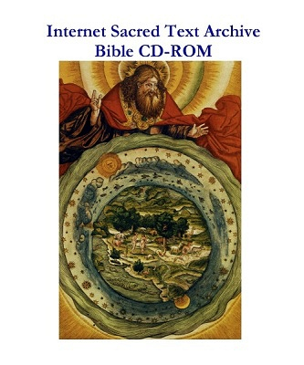

More Info:
Support topic: Changing your PayPal Profile....
Bible CD-ROM 8.0

The Bible CD-ROM 8.0 is the newest CD-ROM from sacred-texts.com. For just $9.95 you get a comprehensive digital edition of the Bible. Our Bible CD-ROM includes features only found on very high-end products. Now, you can own a complete Bible research library, for about the price of a fast-food lunch.
No need to install any software! Other products require extensive installation procedures and take up lots of room on your hard disk. This disk runs on your PC or Macintosh using any standard browser. There is no installation or footprint on your system, so it is ideal if you have to be discrete or are traveling. If you want, you can selectively copy the contents of the disk to your hard drive, and use free tools such as Google Desktop to set up full-text search.
At a low, low price of $9.95, there is no reason not to own this amazing Bible CD-ROM.
PRODUCT FEATURES
This Bible CD-ROM includes the complete text of the Hebrew, Latin and Greek Bibles, and an annotated edition of the King James Version (KJV). It's easy to use, and replaces dozens of pounds of fine-print Bible reference books.
Tools on the disk
Tools on the disk start with the KJV concordance, an electronic index of every word in the KJV. Look up every instance of any word in the Bible! The KJV is also cross-linked with word definitions in Easton's Bible Dictionary. Instantly find background information on Biblical people and places. The Polyglot Bible presents the source texts of the Bible, organized into columns by chapter. In the Polyglot Bible, access built-in Hebrew and Greek lexicons keyed by the standard Strongs' reference numbers. You also get complete data files for all of the primary translations, essential if you want to create your own Bible website. There are also public domain Bible maps on the disk, free for you to reuse.
Other reference works on the disk
Dive further into Biblical analysis with the complete text of books such as The Complete Sayings of Jesus, Prolegomena to the History of Ancient Israel, and numerous books of Apocrypha, both Deuterocanonical and Pseudepigraphical. It includes the Forgotten Books of Eden, a collection of Old Testament Apocrypha. The Deuterocanonical Apocrypha is completely integrated into the hypertext and Polyglot Bible features.
8 additional English Bible translations
In addition to the KJV, this disk includes the full text of eight other English translations: American Standard Version, the Basic English Bible, the Darby Bible, Douay-Rheims, Webster's, World English Bible, the Weymouth New Testament, and Young's Literal Translation.
45 translations into other languages
In addition to the classical texts, this disk also includes translations of the Bible in 45 additional languages.
| Afrikaans | Esperanto | Norwegian |
| Albanian | Estonian | Portuguese |
| Amharic | Finnish | Potawatomi |
| Arabic (Smith/van Dyck) | French (Segond) | Romani |
| Aramaic | Georgian | Russian |
| Armenian (Eastern) | German (Luther) | Scottish Gaelic |
| Armenian (Western) | Gothic | Spanish (de Reina/de Valera) |
| Basque | Hebrew (Modern) | Swahili |
| Breton | Hungarian | Swedish |
| Chamorro | Italian (Diodati) | Tagalog |
| Chinese (Union Version) | Kabyle | Turkish |
| Coptic | Korean | Ukrainian |
| Croatian | Latvian | Vietnamese |
| Danish | Manx | Wolof |
| Dutch | Maori | Xhosa |
REQUIREMENTS: A PC or Macintosh with a CD-ROM drive and a standard Web browser. The CD-ROM does not require a DVD-ROM capable drive, so it will run on very basic or older computers.
NOTE: Shipping worldwide is included in the price of the Bible CD-ROM. You pay just $9.95 per disk! Shipping is via first class postal mail. Disks are sent in high-quality Tyvek sleeves.
If you are on a budget or simply want a top resource for the study of the Bible, on one easy-to-use CD-ROM, the Bible CD-ROM 8.0 is a must buy!
BUY THE BIBLE CD-ROM NOW USING YOUR CREDIT OR DEBIT CARD AT PAYPAL
-->Use the shopping cart for more payment options, including mail order and adding additional products to your order.

Click here for your Cart
Why use the shopping cart?
Buying more than one copy? Placing a mail order? You need to use the shopping cart.
If you want to buy the product by mail order, you need to use the shopping cart. It's easy: fill in the shopping cart and click on the mail order button to print a mail order.
You can also purchase the contents of your cart online using your credit or debit card, or your checking account.
If you want just one copy of a specific product, you can skip the shopping cart and use the 'Buy It Now' links on the left hand side of the page.